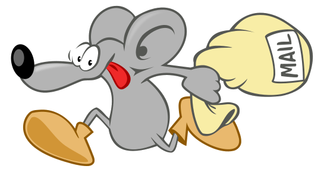
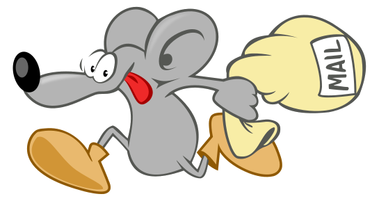

Scelte etiche di
socialbusinessworld.org
economia solidale e software libero
the SBWTECH team
Juho is there!
Etica di un software
pensato per le persone
organizzato per la partecipazione
rivolto ad un mondo migliore
What's your name?
aka: what's your service domain name?
Social Business
- Obiettivo risolvere uno o più problemi sociali
- Autosostenibilità economica e finanziaria
- I finanziatori devono rientrare del solo capitale investito
- I profitti dell’impresa restano al suo interno per miglioramenti ed espansioni
- Rispetto dell'ambiente e delle differenze
- La forza lavoro dell’impresa riceve stipendi e salari di mercato con migliori condizioni lavorative
- ... Si fa con gioia!
Fonte socialbusinessworld.org
Top Level Domain ".org"
Per rivolgersi alla comunità (community)
Fonte archive.icann.org/en/tlds/org/applications/neustar/08.html
Where do you live?
aka: where is your server located?

...where do you live?
in Germany (Europe)
- Nearer than United States ✓
- "Our" laws ✓
- Better privacy protection from government ✓
Fonte www.thewhir.com
Come tratti i tuoi ospiti?
Fonte socialbusinessworld.org
privacy statement was...
Now the privacy statement is
we just started!
con quali strumenti?
which tools do you use?
the social network

elgg.org "Elgg" and the Elgg logo are registered trademarks of Curverider Limited
socialbusinessworld.org
the shop
shop.socialbusinessworld.org
Pad real-time

data analytics
data analytics (2)
CRM - gestione clienti
sicurezza nelle comunicazioni
streaming
Software di sistema
- chi mostra il sito
- chi smista la e-posta
- chi raccoglie i dati
 
Il sistema Debian GNU/Linux

Debian non è solo un sistema
Debian e la comunità

Il cuore GNU/Linux
La storia di Linux
Non si tratta solo di cosa fanno i tuoi strumenti!
come si comportano?
Software Libero per una società libera
nel 1984...
Tutto software libero, in modo che tutti gli utenti siano liberi.
All software is free (as in knowledge) so all users are free.
Un software è libero se
- sei libero di usarlo per qualunque scopo
Un software è libero se
- sei libero di usarlo per qualunque scopo
- sei libero di studiarlo
Un software è libero se
- sei libero di usarlo per qualunque scopo
- sei libero di studiarlo
- sei libero di modificarlo
Un software è libero se ✓
- sei libero di usarlo per qualunque scopo ✓
- sei libero di studiarlo ✓
- sei libero di modificarlo✓
- sei libero di diffonderlo✓
è una comunità che condivide
valori alla base
- ecologia della conoscenza ✓
- collaborazione ✓
- equità ✓
- trasparenza ✓
- rispetto per le persone ✓
opportunità
- no lock-in (no manette) ✓
- no virus ✓
- no costi di licenza ✓